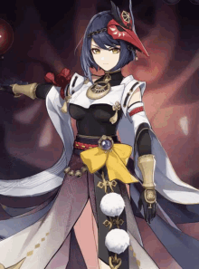

Kamisato Ayaka- Filha do Clã Kamisato da Comissão Yashiro. Solene e elegante, e também sábia e forte. Administrando sua família junto com seu irmão Kamisato Ayato, são suas obrigações e tratar assuntos externos e internos da família, e seu irmão da parte política. Ayaka, uma garota de bom coração, sempre trata as pessoas de forma educada. Onde há conflitos civis, está a Ayaka, dessa forma, ela criou uma boa relação com o povo. Ela leva tudo a sério, e a perfeição é o que sempre busca em sua vida. Ninguém pode deixar de se comover por seus feitos e, naturalmente, querem se aproximar dela, aí veio o apelido Shirasagi Himegimi. Quando seu povo fala sobre ela, eles não conseguem conter seus elogios para ela. Nascida em uma família culta, Ayaka tem um coração tão puro como um cristal de gelo. Ao girar cristais de gelo, você sempre consegue vê-lo emitindo os raios, tão brilhantes como o coração de Ayaka. Por trás de sua seriedade, também se esconde um lado de gentileza no fundo de seu coração. Mas se você tem a ambição de conquistar o universo, terá que ter habilidades de subir às nuvens. Ayaka, que está sempre com uma forte vontade de fazer amizades com os talentosos e habilidosos, acredita que os bons amigos são aqueles que iluminam sua vida, como a ponta brilhante que adorna uma espada.

Kaedehara Kazuha- Um Samurai Errante de Inazuma, humilde e calmo. A sua aparência jovem esconde várias histórias no passado. Ele pode parecer estar despreocupado, mas ele tem seus próprios princípios de agir. Kazuha vive uma vida errante, estando no caminho no dia, e dormindo com o céu como o cobertor e terra como a cama na noite. A riqueza nunca foi a sua busca, e seja o verão ou inverno, o que ele procura é sempre a paz de verdade no seu coração. A selva sempre é o seu lar, mas ele nunca se preocupa com a chuva ou tempestade iminente. A chuva também parece ter medo dele, sempre evitando se aproximar dele. Por curiosidade, alguém perguntou sobre seu talento, e Kazuha sempre respondeu sinceramente: ouvir o vento e contemplar nuvens é o seu talento. As pessoas prestam a mínima atenção à mudança do tempo, e não é nada de surpreendente de não saber dos sinais. Kazuha, que é hábil nisso, sentirá a chegada de neve e chuva de imediato com apenas um sopro de vento ou a umidade anormal, e sabe quando é a hora de procurar um lugar para se acomodar. Posto seus pés em toda a parte do mundo, Kazuha evitou tantas tempestades e tanto relâmpagos, no entanto, desta vez, o que está à sua espera, é uma tempestade sem precedentes. Porém, ele a enfrentará! Chuva, relâmpago e ele, se encontrarão no cruzamento do destino. "Mesmo que seja um movimento mínimo do vento e da chuva, pode ser percebido por mim. Mesmo que não esteja chovendo, ficarei por aqui."

Yoimiya- Dona da loja de fogos de artifícios muito talentosa e criativa. Ela é conhecida como a "Rainha dos Festivais de Verão" de Inazuma. Em cada celebração realizada em Inazuma, nunca faltaram os fogos de artifício feitos pela própria Yoimiya. Com sua criatividade tão ardente como as chamas, ela sempre acaba surpreendendo todas as pessoas. Como sempre mantém um espírito infantil, ela costuma brincar cos joguinhos simples, mas interessantes, com crianças, ou simplesmente acompanha elas para procurar por objetos brilhantes. A inocência e a simplicidade das crianças a deixam muito alegre. Ela também gosta de fazer amigos e aproveitar cada oportunidade para puxar conversa com as pessoas. Parece que sua cabeça está cheia das ideias e anedotas a ser compartilhadas com os outros. Princípios e busca pela perfeição são o que Yoimiya valoriza acima de tudo. Os fogos de artifícios podem desaparecer em um piscar de olhos, mas a memória dos raios tão esplêndidos sempre permanecerá no coração das pessoas. O instante é também a eternidade. Esses milagres momentâneos são como uma proteção que ela oferece às pessoas ao seu redor. “A beleza dos fogos de artifício encontra sua eternidade no entusiasmo das pessoas."
Sayu- Uma ninja pertencente ao Shiyuumatsu-Ban. Seu tamanho pode ser pequeno, mas ela é bastante ágil. Agora que você falou sobre altura, Sayu parou de crescer há tanto tempo, como ela se tivesse caído em um sonho em que o tempo tivesse parado. Quando posso crescer mais? Será que ainda não dormi o suficiente?? Nas poucas vezes em que ela acorda dos sonhos profundos, ela pensa nisso, mas rapidamente cai no sono e volta a sonhar. Sayu acredita profundamente que um bom sono traz boas energias, que ajuda a crescer mais. Para atingir esse objetivo, ela faz o que pode para descansar mais no trabalho, aperfeiçoando seu Ninjutsu até o limite. Sayu definitivamente pode ser considerada uma mestre em fugir, se esconder e se transformar... . Muitas coisas como uma folha ou um barril podem ter um outro nome: Sayu. Portanto, se Shiyuumatsu-Ban precisar da ajuda de Sayu, a primeira coisa que tem que ser feita é encontrá-la. Mas do ponto de vista de Sayu, isso não é uma questão de preguiça, ela apenas gasta seu tempo nas coisas com mais sentido, como por exemplo, dormir e crescer mais.

Shogun Raiden- O soberana indiscutível de Inazuma. Sua Excelência, a Toda Poderosa Narukami Ogosho, que prometeu ao povo de Inazuma uma Eternidade imutável. Destruiu o amor com um relâmpago, forjando uma terra pura com um coração solitário. Durante esses longos anos, o caminho para a eternidade foi escuro e distante, mas Sua Alteza Shogun não hesitou por um momento. Sozinha em silêncio, a eternidade imutável revela sua natureza serena.A Shogun Raiden é a composição de dois seres coexistindo em um só corpo: Ei, a atual Arconte Electro de Inazuma; e a Shogun, a marionete criada por Ei para atuar como governante de Inazuma em seu lugar.

Kujou Sara- General da Comissão Tenryou. Audaciosa, decisiva e habilidosa em combate. Se a Shogun é o trovão acima do céu, Kujou Sara é o raio do qual é difícil se proteger. O relâmpago aparece primeiro, e então haverá um trovão aterrorizante. Como filha adotiva do Clã Kujou, ela sempre foi muito séria. As pessoas sempre tiveram a ideia de que Kujou Sara é alguém muito determinada e não muito sorridente. Essa jovem leal, que carrega pesadas responsabilidades sobre os ombros, honesta com seus deveres, ainda não é tão fria e indiferente quanto parece. Determinada a deixar de lado seus próprios sentimentos para seguir em frente, ela fez a escolha de desistir de uma parte do coração. Sua prioridade é ajudar a Shogun a alcançar a eternidade. Mesmo que ela saiba que ela mesma não estará lá no final, isso não importa para ela. A vitória será de todos, mesmo que o vencedor da batalha não seja eu! Se o ser humano só pudesse ter um desejo, então esse seria o "desejo" de Kujou Sara. Por baixo dessa aparência fria está um coração que arde como fogo e estala como um trovão.
Sangonomiya Kokomi- Sacerdotisa Divina da Ilha Watatsumi, a líder mais exaltada da Ilha Watatsumi. Considerada pelo povo como uma líder com visão estratégica e com características imprevisíveis, Sangonomiya Kokomi está sempre com um sorriso tranquilo no rosto, enquanto administra seus negócios de maneira extremamente ordenada e eficaz. Kokomi começou a ler livros de estratégia militar de vários países desde pequena, se destacando pela sua excelência militar e pela previsão precisa do inimigo. Mesmo que os recursos materiais e humanos estejam longe de ser suficientes, muitas vezes ela conseguiu tornar as desvantagens em vantagens graças às suas táticas. E no nível dos assuntos internos, comerciais, diplomáticos e supervisionais, Kokomi também se dedica de alma e coração, fazendo com que todos na Ilha Watatsumi depositem total confiança nela. "Não se preocupe, temos a Sua Excelência, Sangonomiya". Esta frase está sempre na boca do povo de Sangonomiya. Na verdade, poucas pessoas sabem que o sonho da Kokomi era apenas ser uma conselheira por trás do campo de batalha. Para ela, conversar com pessoas é uma coisa que consume muita energia. Todos discursos fazem suas mãos tremer, e diante dos trabalhos pesados, ela também queria desistir. A coisa que a deixa mais feliz é sempre ler um livro de estudos militares em casa após se livrar dos trabalhos pesados. Chegar em uma posição tão exalta em uma idade ainda jovem, é uma grande fortuna, para a maioria das pessoas. Mas para a Kokomi, quanto mais exalta é a sua posição, mais difícil o dilema é.
Thoma- Thoma, que nasceu em Mondstadt, agora vive em Inazuma, onde é mordomo do Clã Kamisato, é também um conhecido "mediador" em Inazuma. Talvez influenciado pelo ambiente descontraído e alegre de sua cidade natal, Thoma é ótimo em se socializar. Embora seja um estrangeiro, ele construiu uma rede inesperadamente poderosa de amigos em Inazuma. Naturalmente amigável, Thoma pode facilmente se integrar em vários tópicos se conectando com vários tipos de pessoas. Mas quando se trata de defender os direitos e interesses da Comissão Yashiro, Thoma também sabe mostrar seu lado sério. Mas de vez em quando, é possível ver o Thoma sentado sozinho em um canto da Comissão Yashiro pensando sobre questões relacionadas a si mesmo. Uma pessoa atenciosa e sociável que ama os animais e que cuida dos colegas, talvez também sinta uma saudade difícil de ser descrita em palavras.

Arataki Itto- Rápido como o vento, majestoso como o trovão, ele é um homem com o sangue de Povo Oni fluindo em suas veias. Pelos seus chifres dos Oni chamativos e pela sua voz sempre alta, ele se destacou. O seu modo de agir é tão livre que ultrapassou a sua imaginação. É o espírito heroico e o coração fervoroso que o guiam. A felicidade nunca lhe falta em cada momento da vida. Por acaso, você conhece a Gangue Arataki? Não conhece? Não faz mal. A partir de hoje, você conhecerá a Gangue Arataki, que age ativamente em Hanamizaka, e a figura de mais destaque nela - Arataki Itto!
Gorou- Um general de Watatsumi leal e valente. Com a intuição de luta da besta e persistência inata, ele sempre consegue encontrar a oportunidade de vitória com precisão em momentos mais críticos no campo de batalha. Liderando a Tropa de Watatsumi, que está em uma grande desvantagem a nível de recursos militares, para lutar contra o Shogunato, Gorou, por sua vez, está dando o seu melhor para erguer uma muralha de sobrevivência ao povo de Watatsumi. É difícil para outros imaginarem que na verdade, o Gorou, que sempre age como um herói no campo de batalha, de fato é um rapaz de grande coração, que se dá bem com todos os seus subordinados. Aos olhos do Gorou, as pessoas ao seu lado são guerreiros valentes no campo de batalha, também são companheiros próximos. Eles são tão preciosos como baús que ele mesmo tem que proteger! A terra em que pisamos, os companheiros que amamos, a fé que seguimos... Tudo isso são motivos da existência da sua lealdade e valentia. O que se ergue no corpo do Gorou é uma alma tão robusta como a terra.

Yae Miko- A Sacerdotisa do Grande Santuário Narukami, descendente da linhagem Kitsune, amiga próxima da "Eternidade" e a editora-chefe intimidadora da Editora Yae, uma editora de Romances Literários. Não precisa buscar por todos seus lados, pois cada lado reflete a Yae Miko, mas nenhum deles poderá ser a verdadeira ela. Todas as posturas que ela mostra refletem lados diferentes dela como fragmentos de um espelho quebrado, mas possuindo tantas identidades, ela parece ter se tornado uma gema coberta de um espelho de inúmeros lados. Ela tem inúmeras expressões no rosto, séria ou alegre, miserável ou indiferente. Ninguém sabe a verdade, assim como ninguém encontra uma deusa Kitsune passageira em uma floresta secreta. Mas se a Kitsune está observando os seres humanos... qual é o seu destino?
Kamisato Ayato- Como chefe da Comissão Yashiro, Kamisato Ayato está comprometida em manter a prosperidade e estabilidade da região. Ele parece ser uma pessoa discreta e elegante, que não gosta de aparecer em público, tampouco mostrar suas habilidades abertamente. Mas aqueles que o conhecem, sabem que ele não deve ser subestimado. Muitos anos atrás, quando a Comissão Yashiro estava em tempos difíceis, e quando o Clã Kamisato estavas prestas a cair, foi este jovem que se levantou e estabilizou a situação. Ele não teria conseguido alcançar sua posição sem uma desenvoltura extraordinária e astúcia. Entretanto, em seu sorriso impenetrável esconde-se algo mais obscuro. No entanto, a coisa mais intrigante é que na maioria das negociações de que ele participa, ele não é nem implacável, nem competitivo, pelo contrário, até quer compartilhar os benefícios para que todos possam ter um pedaço satisfatório do bolo. "O que ele está planejando exatamente?" - é o que geralmente as pessoas pensam depois de quando tudo está dito e pronto. No entanto, agora que todos têm um pedaço do bolo, talvez o que está na mente de Kamisato Ayato não seja tão importante.
Kuki Shinobu- Apesar de ter aderido à Gangue Arataki muito tarde, ela é uma figura importante que mudou a Gangue Arataki. Com a sua chegada, os negócios da gangue começaram a se envolver em várias áreas, como consultas jurídicas, negociação comercial, organização de banquetes e encomendação de vestuários... Mas o surpreendente é que a Gangue Arataki, uma organização frouxa, tem todas as licenças das áreas envolvidas, todos assinados com o mesmo nome: Kuki Shinobu. Alguns dizem que ela estudou no estrangeiro, outros dizem que ela tem uma boa relação com a Comissão Tenryou. Quando os forasteiros ouvem isso, inevitavelmente têm muitas suspeitas. No entanto, os moradores de Hanamizaka, que muitas vezes lidam com a Gangue Arataki, são diferentes e sempre a procuram para obter conselhos sobre vários assuntos sem reservas. Para eles, as negociações com Kuki Shinobu são sempre tranquilas e eficientes. Apenas tenha sempre em mente as duas regras a seguir: Primeiro, não tente descobrir como ela se parece sob a máscara. Segundo, não pergunte por que ela tem que se afastar do Grande Santuário Narukami toda vez que vai para o trabalho.
Shikanoin Heizou- Um jovem e talentoso detetive da Comissão Tenryou, é despreocupado e sempre de ânimo alto. Pode parecer um patife à primeira vez, mas na verdade, ele é inquestionavelmente o detetive mais destacável da Comissão Tenryou em termos da resolução de casos. Pode-se ver nele, ao mesmo tempo, uma imaginação ousada e uma capacidade de raciocínio meticuloso. Além disso, seu instinto sobre os suspeitos é sempre de cair de queixo! Sempre que ocorre um crime, ele consegue analisar o caso em um ângulo inesperado para depois encontrar a verdade, enquanto seus colegas ainda tentam montar peças de raciocínios com base nas experiências do passado. A sua intuição super aguçada sempre deixou as pessoas impressionadas, como se seu pensamento e eficiência fossem iluminados pelos Arcontes. É neste momento que o Heizou mostra seu sorriso confiante de sempre: "Talvez nem mesmo os Arcontes podem resolver o caso!"
Kirara- A famosa empresa de entregas "Komaniya Express" de Inazuma tem uma funcionária muito especial. À primeira vista, ela se parece com uma jovem adorável com duas caudas balançando atrás dela. Embora trate cada um de seus clientes com gentileza e generosidade, secretamente ela às vezes corre pelos telhados para garantir que nenhuma de suas entregas chegue atrasada... Embora a princípio sua aparência óbvia de youkai tenha inevitavelmente suscitado muitos comentários, à medida que Kirara repetidamente apresentava sua honestidade e clareza, combinadas com sua extrema diligência e capacidade de cumprir suas tarefas, as pessoas não só deixaram de ter dúvidas sobre ela, mas até mostram gratidão pela simples presença desta jovem donzela. "Segurança e pontualidade", "serviço garantido", "animada e adorável"... Essas três frases são as mais comuns usadas para avaliar a Kirara. Dizem que ao dar uma avaliação de cinco estrelas ou oferecer a ela alguns petiscos, será possível ver o rosto da Kirara se iluminando de gratidão com suas caudas abanando alegremente. Para Kirara, seu trabalho é tão precioso quanto qualquer joia. Ela valoriza tudo sobre a sociedade humana e sempre fica muito feliz em ver os rostos sorridentes de seus clientes, dando o melhor de si para oferecer o melhor serviço possível para cada um. Afinal, se ela for demitida pela empresa, tudo o que pode fazer é voltar a ser uma youkai nas montanhas. Felizmente, seu chefe na "Komaniya Express" nunca sequer pensou em demiti-la. Muito pelo contrário, ele até mesmo perguntou a Kirara se ela gostaria de ganhar um salário mais alto e passar a fazer trabalho de secretariado, que exigiria menos esforço. Ao ouvir isso, Kirara o rejeitou imediatamente. Ela não teve coragem de assumir ao seu chefe que, para ela, cada vez que sai para fazer uma entrega, é como se ela estivesse fazendo um passeio com todas as despesas pagas!